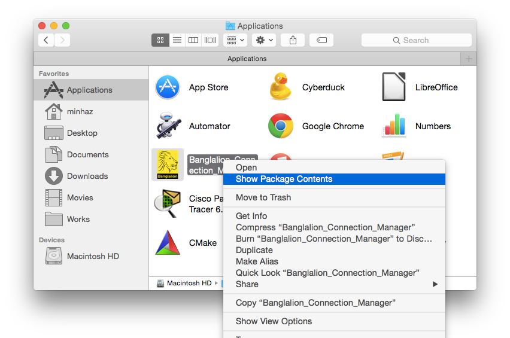
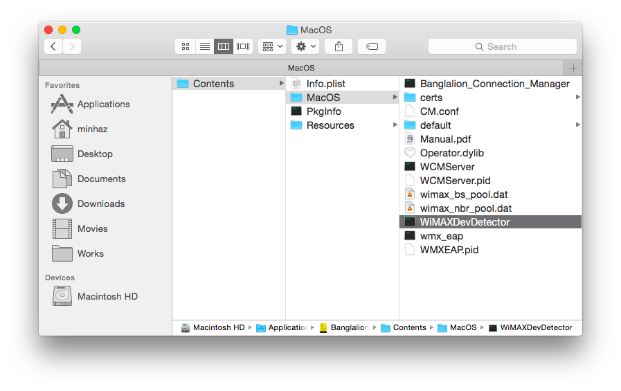
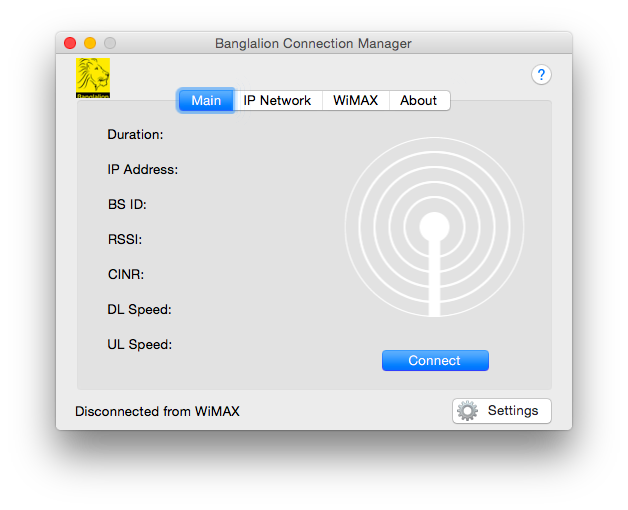
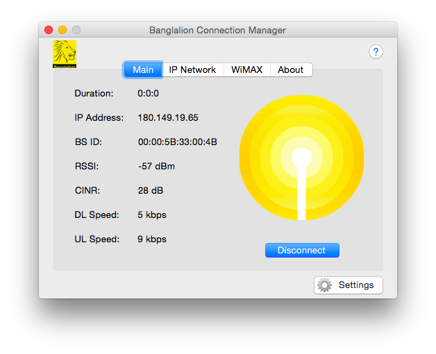
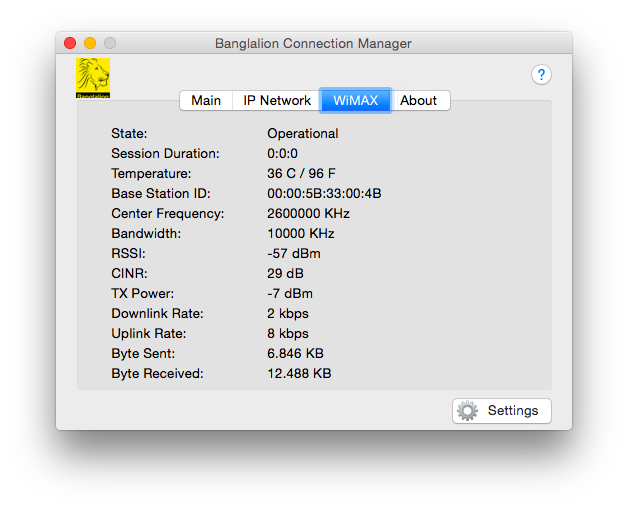
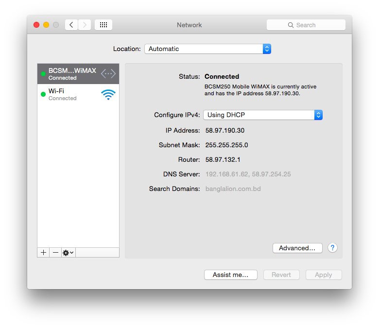

Before You Begin
This guide is unofficial, not verified or authorized by Banglalion Communications Ltd. You must accept that I will not be responsible for any kind of loss to your device or computer. You will need a Mac with OS X 10.5 or later installed.
Special Thanks
Thanks to Rafat Touqir Rafsun for the suggestion of using WiMAXDevDetector tool.
Thanks to Ujjal Suttra Dhar for reporting that other devices are working perfectly.
Downloads
Get the file WiMAXCMInst.zip
Supported Devices
- WU216
- WIXUBB216
- AX226
Install
Extract the file WiMAXCMInst.zip and run WiMAXCMInst.mpkg bundle. You will be prompted to enter your account password for administrative access. After installing Restart your mac and plug in the modem.
But the Device Doesn't Showing up?
There has been a massive changes to Mac OS X since the release of version 10.8. So you need to do some trick to make the device load its firmware. Run the following line in a terminal
/Applications/Banglalion_Connection_Manager.app/Contents/MacOS/WiMAXDevDetector and then the device LED shoud lit up.
Alternatively you can start the WiMAXDevDetector manually.
Go to Applications from Finder, right click
Banglalion_Connection_Manager.app and click Show package contents.

Then go to Banglalion_Connection_Manager.app/Contents/MacOSX/ and run
WiMAXDevDetector. Your device LED should change its color depending on the model. For me, it turned into green.

Run the application Banglalion_Connection_Manager, Click Settings and fill up your username and password.

If the username and password is both correct, your device should be connected to the internet. If not, it may be network issue or you entered a wrong username and password combination.

Info tab inside the connection manager application.

Even the device is shown up at Network with the alias BCSM250 Mobile WiMAX.

Video
F.A.Q.
|
A: I will give a try to apply the same trick to load AX226 with it. Keep an eye on this page. |
|
Q: If I get the modem AirStream 1100 F25, will it work on Mavericks or Yosemite?
A: No. I own a AirStream 1100 F25, it doesn't work on Mac OS X 10.8 or later. Apple removed the RNDIS feature from Mac years ago. It doesn't support Ethernet over USB right now. |
|
Q: Do I need to boot my Mac into 32-bit mode?
A: No. This solution works on 64-bit perfectly. |
|
Q: Does it work on Mavericks or Mountain Lion or Yosemite?
A: The installer claims that it will run on Mac 10.5+. I tested it on Mac OS X 10.10. So it should also work on Mavericks or Mountain Lion. |
|
Q: I have a question that is not listed here.
A: Please comment to this post's Disqus thread. |